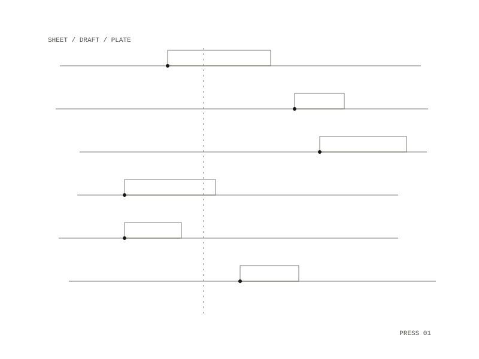

Persona Forge
Paste a piece of your own writing and the desk sets it as a numbered sheet with one native draft per platform, each made from your own sentences. Circle a draft to approve it, strike it to reject it, edit it in place, or click a quoted line and then a sentence in the source to swap it in.

The sheet
The source text sits on top and the drafts sit below it, one per platform in that platform's shape: a Mastodon post, a Bluesky thread, a LinkedIn post, an Instagram carousel, a 9:16 plate with its caption. The marks are taken from a photographer's contact sheet, where a single red circle made by hand selects a frame. Swapping a sentence in the source replaces it in every draft that quoted it.
How a draft is made
A model chooses, per platform, which of the writer's sentences carry the piece, in what order and where to cut. Every draft is then checked by code: each quoted line must be a verbatim substring of the source, connective text is at most 20% by characters, and the platform's length, part-count and hashtag limits apply. Errors go back for up to two retries, and a draft that still fails falls back to a deterministic picker, which the sheet names.
An edit stores the text before and after and the distance between them. Edits are turned into voice rules, such as "use 'plate', not 'post'", which are proposals the writer accepts or rejects.
Sending
Approving is human only. A circled draft goes out through the official API where the platform allows it, in dry run until the account goes live, and as a copy-and-open handoff everywhere else. Which route a draft takes is decided by a capability matrix built from each platform's developer docs, one row per platform and action. A kill switch at the top right of the desk halts all sending.
Plates and recordings
Make plate scores the writing (verbatim fragments, one noun, an arc of fixed verbs), and a render step on the host draws it at 9:16, 4:5 and 1:1 and checks that each clip loops. A recording of the writer reading the piece is transcribed locally, aligned to the source by code and cut per platform, with captions in the source's wording, never the transcript's.
Docker on your own machine, in the browser on localhost
Mastodon through its API; copy-and-open handoffs for the other platforms